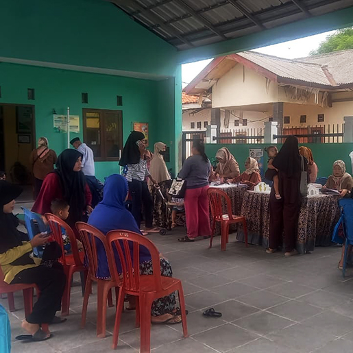

MediaKada | Kegiatan Posyandu Siklus Hidup Melati RW 08 Kelurahan kelapa Dua kembali digelar dengan penuh semangat. Sejak pagi, warga RW 08 berbondong-bondong mendatangi lokasi Posyandu untuk mendapatkan pelayanan kesehatan gratis yang disediakan oleh para petugas dan kader.
Pelayanan yang diberikan mencakup seluruh siklus kehidupan, mulai dari balita, remaja, dewasa, hingga lansia. Untuk balita, dilakukan pemeriksaan tumbuh kembang, imunisasi, serta pemberian vitamin. Warga dewasa mendapatkan layanan cek tekanan darah, konsultasi kesehatan, dan penyuluhan gizi. Sementara itu, para lansia memperoleh pemeriksaan kesehatan rutin serta arahan mengenai pola hidup sehat.
Kegiatan ini tidak hanya menjadi sarana pemeriksaan kesehatan, tetapi juga wadah mempererat kebersamaan warga. Antusiasme masyarakat terlihat dari tingginya partisipasi, yang menunjukkan kesadaran akan pentingnya menjaga kesehatan sejak dini hingga usia lanjut.
Dengan adanya Posyandu Siklus Hidup Melati RW 08, diharapkan kualitas kesehatan warga Kelurahan Kelapa Dua semakin meningkat, sekaligus memperkuat semangat gotong royong dalam menjaga kesejahteraan bersama.